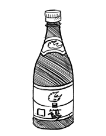

sake
Sake is Japanese rice beer, and it comes in a variety of flavors and concentrations. There is nihonshu-do 日本酒度, san-do 酸度, aminosan-do アミノ酸度, ginjoushu 吟醸酒 and many, many more. Sake is made by fermenting rice that has been polished to remove the outer bran. The process of sake is more similar to beer than to wine, because the starch is converted into sugars which ferment into alcohol. The serving temperature of sake depends on the type. Sake can be served at room temperature hiya 冷や, chilled reishu 冷酒 or heated atsukan 熱燗.
In cooking, you can use a cheaper variety called ryorishu 料理酒 or cooking sake. Cooking sake has added salt to make it unfit for drinking, so that shop owners can sell it without an alcohol license. Adding regular sake in recipes though is also fine.